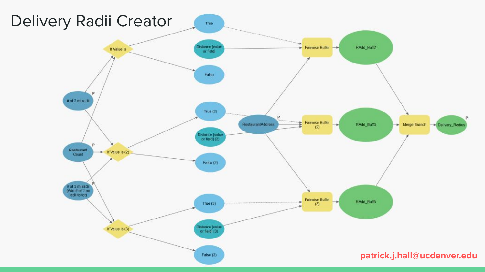
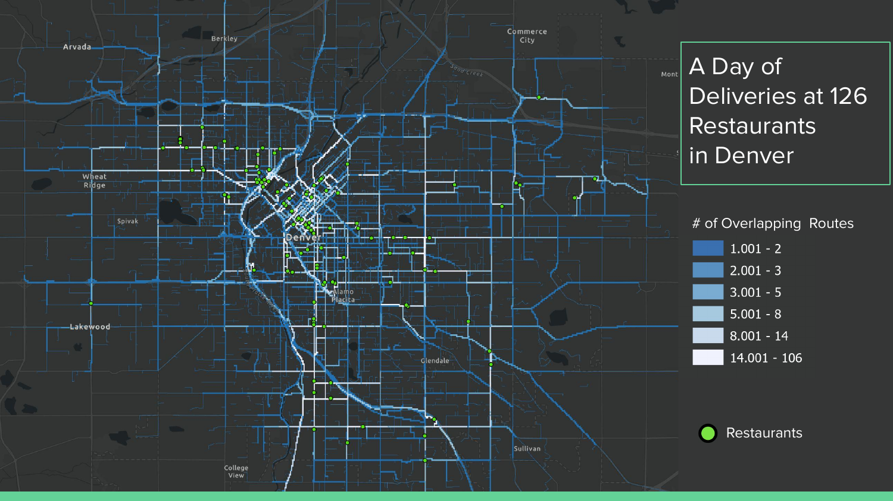
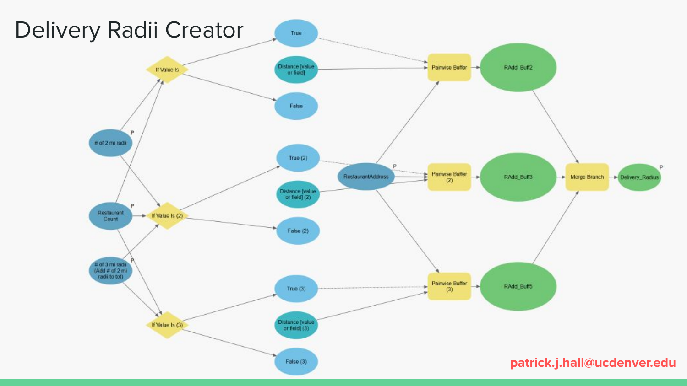
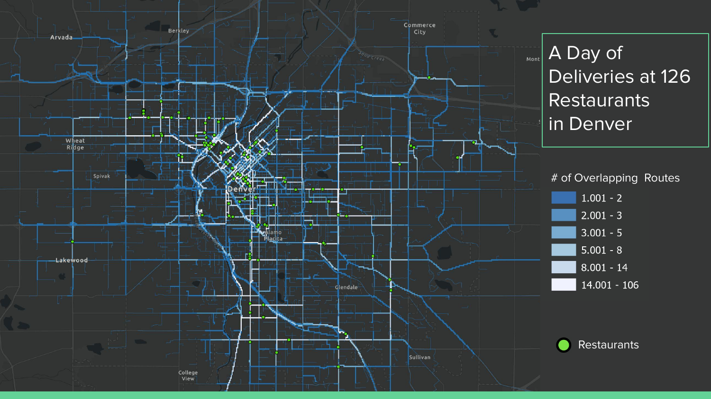

Overview
Between the onset of the pandemic in March 2020 and the Fall of 2022, third-party food delivery platforms experienced a significant increase in orders for meals and groceries. Doordash alone, one of the most popular food delivery companies in the US, saw its revenues increase 33% between September 2021 and September 2022.
Utilizing ESRI's Model Builder suite and the Network analyst extension for ArcGIS Pro, this project was a thought experiment exploring how the expansion of platform-based food delivery services in Denver, CO change the city's urban landscape.
Methodology
I created this model to simulate delivery routes from restaurants over the course of a single day, with the total number of orders based on restaurant responses to an online survey over the course of Spring 2022. Ordering delivery can often feel convenient, but comes with many costs, not all of them felt immediately.
Presentation
I presented this model at the American Association of Geographer's (AAG) Conference in 2023. Take a look at the slide deck below to see the full story and the models used to create the maps.
Gallery

 


